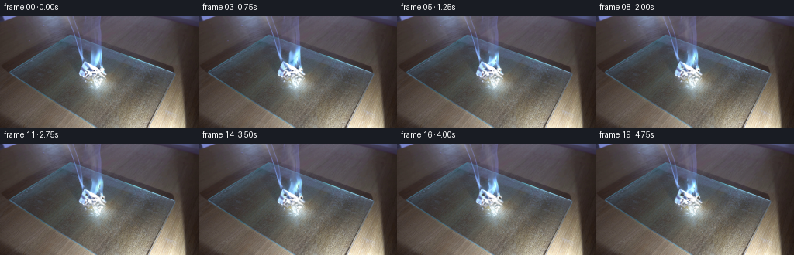
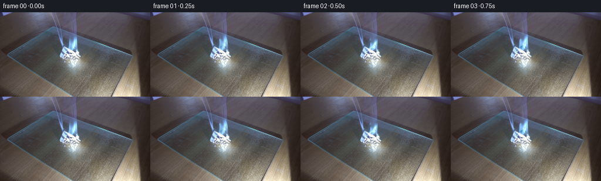
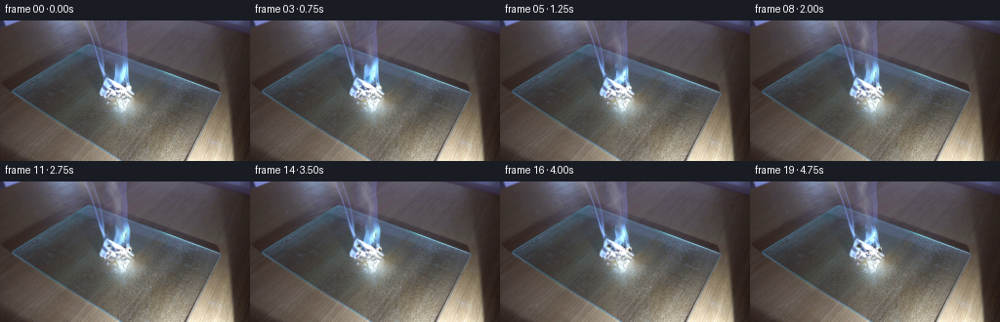

CODING AGENTS AS PIXEL WORLD MODELS
traex/GPT-6.1-Sol · 0141
点击播放 · 原生 RGB 像素
逐轮保存的候选
回放视频、检查图与代码变化。
每份候选均可单独播放。实际图片检查记录在下方工具轨迹中。
候选 01播放与检查图
点击播放 · 原生 RGB 像素


展开代码变化
--- 上一保存版本
+++ 本次保存版本
@@ -0,0 +1,155 @@
+from pathlib import Path
+import numpy as np
+import cv2
+from PIL import Image
+from scipy.ndimage import gaussian_filter, map_coordinates
+import artifact_io
+
+ROOT = Path(__file__).resolve().parent
+H, W = 144, 256
+
+def smoothstep(a, b, v):
+ z = np.clip((v-a)/(b-a), 0, 1)
+ return z*z*(3-2*z)
+
+def polygon(points):
+ m=np.zeros((H,W),np.uint8)
+ cv2.fillPoly(m,[np.array(points,np.int32)],255)
+ return m.astype(np.float32)/255
+
+def sample(a, sx, sy):
+ if a.ndim==2:
+ return cv2.remap(a.astype(np.float32),sx.astype(np.float32),sy.astype(np.float32),cv2.INTER_LINEAR,borderMode=cv2.BORDER_CONSTANT)
+ return cv2.remap(a.astype(np.float32),sx.astype(np.float32),sy.astype(np.float32),cv2.INTER_LINEAR,borderMode=cv2.BORDER_CONSTANT)
+
+def generate():
+ original=np.array(Image.open(ROOT/'first_frame.png').convert('RGB'))
+ src=original.astype(np.float32)
+ y,x=np.mgrid[:H,:W].astype(np.float32)
+ rng=np.random.default_rng(91417)
+ # Isolate the luminous blue tongues from the original exposure, while
+ # retaining all of the stationary glass edge and paper fold texture.
+ support=polygon([(124,40),(131,40),(132,60),(130,65),(121,66),(117,60),(117,48),(123,46)])
+ chroma=src[:,:,2]-src[:,:,0]
+ flame_mask=gaussian_filter(support*smoothstep(27,73,chroma),.48)
+ remove=(flame_mask>.12).astype(np.uint8)*255
+ under=cv2.inpaint(original,remove,4,cv2.INPAINT_TELEA).astype(np.float32)
+ flame=(src-under)*flame_mask[:,:,None]
+ clean=src-flame
+ # A mask for the actual folded sheet, not its soft reflection in the glass.
+ sheet=polygon([(107,59),(112,60),(127,69),(130,65),(133,67),(134,72),(138,75),(136,78),(130,80),(111,79),(102,76),(102,70)])
+ sheet=gaussian_filter(sheet,.48)
+ paper_light=smoothstep(108,193,clean.mean(2))
+ material=sheet*paper_light
+ grain=gaussian_filter(rng.normal(size=(H,W)),.42)
+ grain=grain/(grain.std()+1e-6)
+ fine=gaussian_filter(rng.random((H,W)),.65)
+ # Three separate fronts creep along different folds, rather than
+ # darkening the whole piece of paper as a single flat object.
+ d1=np.sqrt(((x-111)/1.1)**2+((y-65)/.8)**2)
+ d2=np.sqrt(((x-132)/.85)**2+((y-70)/1.0)**2)
+ d3=np.sqrt(((x-121)/1.15)**2+((y-73)/.82)**2)
+ boundary_noise=gaussian_filter(rng.normal(size=(H,W)),1.0)*2.3
+ distance=np.minimum(d1,np.minimum(d2+.5,d3+2.6))+boundary_noise
+ # Smoke is constructed as a continuous, advecting volume of many small
+ # parcels; optical depth, not white opaque painted outlines, is composited.
+ ss=3
+ yy,xx=np.mgrid[:H*ss,:W*ss].astype(np.float32)/ss
+ birth_times=np.arange(-1.0,5.0,.065)
+ parcels=[]
+ for b in birth_times:
+ parcels.append((b,rng.uniform(-1,1),rng.uniform(-1,1),rng.uniform(.72,1.25),rng.uniform(0,6.283)))
+ frames=[original.copy()]
+ for k in range(1,20):
+ t=k/4
+ progress=t/4.75
+ # The paper stays in place; small local fold deflections develop
+ # slowly as the edges lose stiffness under the flame.
+ movemask=sheet*smoothstep(57,66,y)*(1-smoothstep(77,82,y))
+ dy=movemask*(.70*progress+.31*np.sin(t*2.3+(x-109)*.32)*progress)
+ dx=movemask*.35*progress*np.sin((y-60)*.35+t*1.6)
+ paper=sample(clean,x-dx,y-dy)
+ image=clean+(paper-clean)*movemask[:,:,None]
+ # Localised browning, then char. Unburned faces retain the source's
+ # creases, grain and specular illumination.
+ radius=.25+2.8*progress
+ scorch=(1-smoothstep(radius-1.7,radius+1.2,distance))*material
+ char=(1-smoothstep(radius-1.8,radius-.2,distance))*material
+ scorch*=smoothstep(0,.7,t)
+ char*=smoothstep(.5,2.0,t)
+ brown=np.stack([83+grain*6,67+grain*5,53+grain*4],2)
+ carbon=np.stack([39+grain*4,38+grain*4,37+grain*4],2)
+ image=image*(1-.61*scorch[:,:,None])+brown*(.61*scorch[:,:,None])
+ image=image*(1-.65*char[:,:,None])+carbon*(.65*char[:,:,None])
+ # Flicker is non-periodic in appearance, but deterministic and
+ # temporally coherent. The flame roots remain attached to the folds.
+ height=1+.135*np.sin(t*9.1)+.065*np.sin(t*19.3+.4)+.05*np.sin(t*4.7)
+ width=1+.11*np.sin(t*7.3+1.2)
+ elevation=np.clip((66-y)/25,0,1.5)
+ sway=(1.6*np.sin(t*8.2-elevation*3.6)+.8*np.sin(t*15.7+elevation*5.4))*elevation
+ fsx=124+(x-124-sway)/width
+ fsy=66+(y-66)/height
+ fsy+=.70*np.sin(x*.57+t*12.1)*elevation
+ live=sample(flame,fsx,fsy)
+ lum=1+.075*np.sin(t*17.4)+.06*np.sin(t*8.7+1)
+ image+=live*lum
+ # A little fresh blue combustion flickers at the lower part of the
+ # tongues, mingling with the photographic flame rather than replacing it.
+ extra=np.zeros((H,W),np.float32)
+ for j,(cx,cy,h,w) in enumerate([(124.5,66,19,3.1),(119.5,66,10,2.1),(131.2,70,9,1.7)]):
+ ht=h*(1+.22*np.sin(t*10.7+j*2.1)+.10*np.sin(t*18.3+j))
+ q=(cy-y)/ht
+ bend=(.8*np.sin(t*8.1-j+q*5)+.45*np.sin(t*15.3+q*7))*np.maximum(q,0)
+ ww=w*np.maximum(1-q,.03)**.68
+ z=(x-cx-bend)/np.maximum(ww,.4)
+ a=np.exp(-z*z*1.6)*smoothstep(0,.1,q)*(1-smoothstep(.75,1,q))
+ a*=.04*(.7+.3*np.sin(t*13+j))
+ extra+=a
+ image=image*(1-extra[:,:,None])+np.array([148,216,255],np.float32)*extra[:,:,None]
+ # Glass catches a faint, rapidly varying blue-white reflection directly
+ # beneath the fire; the cutting board itself is immobile.
+ refl=np.exp(-((x-124)/12)**2-((y-86)/7.8)**2)
+ image+=refl[:,:,None]*np.array([2.1,3.1,3.8])*(np.sin(t*9.1)+.5*np.sin(t*19.3))
+ density=np.zeros_like(xx)
+ for birth,jx,jy,amp,phase in parcels:
+ age=t-birth
+ if age<0 or age>4.6: continue
+ # A rising column widens and breaks into curled veils with age.
+ rise=17.0*age+1.5*age**1.35
+ cy=60-rise+jy*.4*age
+ cx=124-1.3*age-.50*age*age+1.25*np.sin(age*2.4+birth*2.3)+jx*(.5+.65*age)
+ rx=1.05+1.15*age
+ ry=1.8+1.50*age
+ # Warped ellipsoids have neither circular outlines nor isolated
+ # particle dots; the dense stream merges into continuous wisps.
+ qx=xx+.65*np.sin(yy*.27-t*2.8)+.5*age*np.sin(yy*.12+xx*.17-t*1.8)
+ qy=yy+.52*age*np.sin(xx*.2+yy*.13+t*1.4)
+ radial=((qx-cx)/rx)**2+((qy-cy)/ry)**2
+ puff=np.exp(-radial*1.3)
+ fade=smoothstep(0,.16,age)*(1-smoothstep(2.8,4.6,age))
+ density+=puff*(.040*amp*fade/(1+.22*age))
+ # An off-axis shredded edge of the same parcel produces filamentary
+ # eddies at the sides of the main rising smoke stream.
+ if age>.45:
+ curlx=cx+(1.2+age)*np.sin(age*2.1+birth*1.8)
+ curly=cy+(1.2+age)*np.cos(age*2.1+birth*1.8)
+ r=((qx-curlx)/(rx*.6))**2+((qy-curly)/(ry*.83))**2
+ density+=np.exp(-r*1.4)*.014*amp*fade/(1+.4*age)
+ n=(.64+.15*np.sin(xx*.30+yy*.17-t*2.9)+.11*np.sin(xx*.65-yy*.40+t*5.3)+.065*np.sin(xx*1.4+yy*.95-t*8.1))
+ density*=np.clip(n,.2,1.0)
+ density*=smoothstep(0,.65,t)
+ # Smooth camera-scale integration of the semi-transparent smoke.
+ alpha=1-np.exp(-density)
+ alpha=cv2.resize(alpha,(W,H),interpolation=cv2.INTER_AREA)
+ # Neutral white smoke, weakly blue in the cool light close to the flame.
+ whiteness=np.clip(220-6*(y/144)+grain*.55,205,229)
+ smoke=np.stack([whiteness-1.5,whiteness,whiteness+2],2)
+ image=image*(1-alpha[:,:,None])+smoke*alpha[:,:,None]
+ frames.append(np.clip(image,0,255).round().astype(np.uint8))
+ result=np.stack(frames)
+ assert np.array_equal(result[0],original)
+ artifact_io.save(result,ROOT)
+ return result
+
+if __name__=='__main__':
+ generate()
候选 02播放与检查图
点击播放 · 原生 RGB 像素

展开代码变化
--- 上一保存版本
+++ 本次保存版本
@@ -117,8 +117,8 @@
# A rising column widens and breaks into curled veils with age.
rise=17.0*age+1.5*age**1.35
cy=60-rise+jy*.4*age
- cx=124-1.3*age-.50*age*age+1.25*np.sin(age*2.4+birth*2.3)+jx*(.5+.65*age)
- rx=1.05+1.15*age
+ cx=124-1.3*age-.50*age*age+1.75*np.sin(age*2.4+birth*2.3)+jx*(.5+.65*age)
+ rx=1.15+1.55*age
ry=1.8+1.50*age
# Warped ellipsoids have neither circular outlines nor isolated
# particle dots; the dense stream merges into continuous wisps.
@@ -127,14 +127,20 @@
radial=((qx-cx)/rx)**2+((qy-cy)/ry)**2
puff=np.exp(-radial*1.3)
fade=smoothstep(0,.16,age)*(1-smoothstep(2.8,4.6,age))
- density+=puff*(.040*amp*fade/(1+.22*age))
+ density+=puff*(.077*amp*fade/(1+.22*age))
# An off-axis shredded edge of the same parcel produces filamentary
# eddies at the sides of the main rising smoke stream.
if age>.45:
curlx=cx+(1.2+age)*np.sin(age*2.1+birth*1.8)
curly=cy+(1.2+age)*np.cos(age*2.1+birth*1.8)
r=((qx-curlx)/(rx*.6))**2+((qy-curly)/(ry*.83))**2
- density+=np.exp(-r*1.4)*.014*amp*fade/(1+.4*age)
+ density+=np.exp(-r*1.4)*.024*amp*fade/(1+.4*age)
+ # A smaller stream leaves the smouldering left edge of the folded
+ # paper and is entrained towards the main plume as it rises.
+ lcx=111+2.3*age-.35*age*age+1.5*np.sin(age*2.8+birth*1.5)
+ lcy=67-rise*.94
+ rr=((qx-lcx)/(rx*.66))**2+((qy-lcy)/(ry*.9))**2
+ density+=np.exp(-rr*1.35)*.025*amp*fade/(1+.38*age)
n=(.64+.15*np.sin(xx*.30+yy*.17-t*2.9)+.11*np.sin(xx*.65-yy*.40+t*5.3)+.065*np.sin(xx*1.4+yy*.95-t*8.1))
density*=np.clip(n,.2,1.0)
density*=smoothstep(0,.65,t)
可观测工具轨迹
实际执行的命令与返回图片。
命令 1exit 0
/bin/bash -lc 'ls -la && cat prompt.txt && cat GENERATION_RULES.md'
命令 2exit 0
/bin/bash -lc "cat artifact_io.py && python - <<'PY'
from PIL import Image
import numpy as np
im=np.array(Image.open('first_frame.png'))
print(im.shape)
for y in range(0,144,4):
s=''
for x in range(0,256,4):
r,g,b=im[y:y+4,x:x+4].mean((0,1))
v=(r+g+b)/3
if r>g*1.35 and r>b*1.7 and r>110: c='F'
elif r>g*1.15 and r>b*1.3: c='o'
elif b>r*1.25 and b>g*1.05:c='b'
elif v<35:c=' '
elif v<65:c='.'
elif v<100:c=':'
elif v<140:c='-'
elif v<180:c='='
elif v<215:c='+'
else:c='#'
s+=c
print(f'{y:3} '+s)
print('range', im.min((0,1)), im.max((0,1)))
PY"命令 3exit 0
/bin/bash -lc "python - <<'PY'
import numpy as np
from PIL import Image
im=np.array(Image.open('first_frame.png'))
# coarse color samples
for y in range(0,144,8):
print(y, ' '.join('%02x%02x%02x'%tuple(p) for p in im[y+3,3::8]))
print('\\nCenter region luminance ascii 1px')
g=im.mean(-1)
for y in range(32,107,2):
print('%3d '%y+''.join(' .:-=+*#%@'[min(int(g[y:y+2,x:x+1].mean()/26),9)] for x in range(85,150)))
print(' bright coords row')
for y in range(30,104):
xs=np.flatnonzero(np.max(im[y],1)>235)
if len(xs):print(y, [(int(x),im[y,x].tolist()) for x in xs if x<155 and x>85])
PY"命令 4exit 0
/bin/bash -lc "python - <<'PY'
from PIL import Image
import numpy as np
im=np.asarray(Image.open('first_frame.png')).astype(float)
# brightness and blue chroma encoded
for y in range(15,101):
s=''
for x in range(80,146):
r,g,b=im[y,x];v=(r+g+b)/3
if v>240:c='@'
elif v>215:c='#'
elif v>190:c='O'
elif v>160:c='*'
elif b-r>45 and b>135:c='B'
elif b-r>25 and b>95:c='b'
elif v>120:c='+'
elif v>95:c='='
elif v>75:c='-'
elif v>55:c=':'
else:c='.'
s+=c
print(f'{y:3d} {s}')
PY"命令 5exit 0
/bin/bash -lc "python - <<'PY'
from PIL import Image
import numpy as np
im=np.array(Image.open('first_frame.png'))
for y in range(0,81,2):
# horizontal pixel above background near center
print(y, ' '.join('%d:%d,%d,%d'%(x,*im[y,x]) for x in [88,90,92,94,96,98,100,102,104,106,108,110,112,114,116,118,120,122,124,126,128,130,132,134,136]))
PY"命令 6exit 0
/bin/bash -lc "python - <<'PY'
import numpy as np
from PIL import Image
im=np.array(Image.open('first_frame.png'))
# RGB tiny region bottom paper alternative ascii by chroma and brightness, each pixel
for y in range(38,98):
s=''
for x in range(99,144):
r,g,b=map(float,im[y,x]); v=(r+g+b)/3
if v>242:c='@'
elif v>222:c='#'
elif v>200:c='O'
elif v>175:c='*'
elif v>150:c='+'
elif v>125:c='='
elif v>100:c='-'
elif v>80:c=':'
elif v>65:c='.'
else:c=' '
s+=c
print(f'{y:3d} {s}')
PY"命令 7exit 0
/bin/bash -lc "python - <<'PY'
import importlib.util
for s in ['cv2','scipy','numpy','PIL']: print(s, bool(importlib.util.find_spec(s)))
import numpy as np
from PIL import Image
im=np.array(Image.open('first_frame.png'))
# strongest blue excess peaks by row upper part
for y in range(0,64,2):
v=im[y].astype(float);e=v[:,2]-v[:,0]
inds=np.flatnonzero((e[82:136]>26))+82
print(y, [(int(x),int(e[x])) for x in inds])
PY"命令 8exit 0
/bin/bash -lc "mkdir -p .tmp && cat > .tmp/examine.py <<'PY'
import numpy as np, cv2
from PIL import Image
im=np.array(Image.open('first_frame.png')).astype(float)
y,x=np.mgrid[:144,:256]
blue=im[:,:,2]-im[:,:,0]
roi=((y>=36)&(y<78)&(x>98)&(x<136))
m=roi&(blue>28)
print('blue flame pixels', m.sum())
for yy in range(36,79):
xs=np.flatnonzero(m[yy]);print(yy, (xs.min(),xs.max(),len(xs)) if len(xs) else '')
PY
python .tmp/examine.py"命令 9exit 0
/bin/bash -lc "cat > generate.py <<'PY'
from pathlib import Path
import numpy as np
import cv2
from PIL import Image
from scipy.ndimage import gaussian_filter, map_coordinates
import artifact_io
ROOT = Path(__file__).resolve().parent
H, W = 144, 256
def smoothstep(a, b, v):
z = np.clip((v-a)/(b-a), 0, 1)
return z*z*(3-2*z)
def polygon(points):
m=np.zeros((H,W),np.uint8)
cv2.fillPoly(m,[np.array(points,np.int32)],255)
return m.astype(np.float32)/255
def sample(a, sx, sy):
if a.ndim==2:
return cv2.remap(a.astype(np.float32),sx.astype(np.float32),sy.astype(np.float32),cv2.INTER_LINEAR,borderMode=cv2.BORDER_CONSTANT)
return cv2.remap(a.astype(np.float32),sx.astype(np.float32),sy.astype(np.float32),cv2.INTER_LINEAR,borderMode=cv2.BORDER_CONSTANT)
def generate():
original=np.array(Image.open(ROOT/'first_frame.png').convert('RGB'))
src=original.astype(np.float32)
y,x=np.mgrid[:H,:W].astype(np.float32)
rng=np.random.default_rng(91417)
# Isolate the luminous blue tongues from the original exposure, while
# retaining all of the stationary glass edge and paper fold texture.
support=polygon([(124,40),(131,40),(132,60),(130,65),(121,66),(117,60),(117,48),(123,46)])
chroma=src[:,:,2]-src[:,:,0]
flame_mask=gaussian_filter(support*smoothstep(27,73,chroma),.48)
remove=(flame_mask>.12).astype(np.uint8)*255
under=cv2.inpaint(original,remove,4,cv2.INPAINT_TELEA).astype(np.float32)
flame=(src-under)*flame_mask[:,:,None]
clean=src-flame
# A mask for the actual folded sheet, not its soft reflection in the glass.
sheet=polygon([(107,59),(112,60),(127,69),(130,65),(133,67),(134,72),(138,75),(136,78),(130,80),(111,79),(102,76),(102,70)])
sheet=gaussian_filter(sheet,.48)
paper_light=smoothstep(108,193,clean.mean(2))
material=sheet*paper_light
grain=gaussian_filter(rng.normal(size=(H,W)),.42)
grain=grain/(grain.std()+1e-6)
fine=gaussian_filter(rng.random((H,W)),.65)
# Three separate fronts creep along different folds, rather than
# darkening the whole piece of paper as a single flat object.
d1=np.sqrt(((x-111)/1.1)**2+((y-65)/.8)**2)
d2=np.sqrt(((x-132)/.85)**2+((y-70)/1.0)**2)
d3=np.sqrt(((x-121)/1.15)**2+((y-73)/.82)**2)
boundary_noise=gaussian_filter(rng.normal(size=(H,W)),1.0)*2.3
distance=np.minimum(d1,np.minimum(d2+.5,d3+2.6))+boundary_noise
# Smoke is constructed as a continuous, advecting volume of many small
# parcels; optical depth, not white opaque painted outlines, is composited.
ss=3
yy,xx=np.mgrid[:H*ss,:W*ss].astype(np.float32)/ss
birth_times=np.arange(-1.0,5.0,.065)
parcels=[]
for b in birth_times:
parcels.append((b,rng.uniform(-1,1),rng.uniform(-1,1),rng.uniform(.72,1.25),rng.uniform(0,6.283)))
frames=[original.copy()]
for k in range(1,20):
t=k/4
progress=t/4.75
# The paper stays in place; small local fold deflections develop
# slowly as the edges lose stiffness under the flame.
movemask=sheet*smoothstep(57,66,y)*(1-smoothstep(77,82,y))
dy=movemask*(.70*progress+.31*np.sin(t*2.3+(x-109)*.32)*progress)
dx=movemask*.35*progress*np.sin((y-60)*.35+t*1.6)
paper=sample(clean,x-dx,y-dy)
image=clean+(paper-clean)*movemask[:,:,None]
# Localised browning, then char. Unburned faces retain the source's
# creases, grain and specular illumination.
radius=.25+2.8*progress
scorch=(1-smoothstep(radius-1.7,radius+1.2,distance))*material
char=(1-smoothstep(radius-1.8,radius-.2,distance))*material
scorch*=smoothstep(0,.7,t)
char*=smoothstep(.5,2.0,t)
brown=np.stack([83+grain*6,67+grain*5,53+grain*4],2)
carbon=np.stack([39+grain*4,38+grain*4,37+grain*4],2)
image=image*(1-.61*scorch[:,:,None])+brown*(.61*scorch[:,:,None])
image=image*(1-.65*char[:,:,None])+carbon*(.65*char[:,:,None])
# Flicker is non-periodic in appearance, but deterministic and
# temporally coherent. The flame roots remain attached to the folds.
height=1+.135*np.sin(t*9.1)+.065*np.sin(t*19.3+.4)+.05*np.sin(t*4.7)
width=1+.11*np.sin(t*7.3+1.2)
elevation=np.clip((66-y)/25,0,1.5)
sway=(1.6*np.sin(t*8.2-elevation*3.6)+.8*np.sin(t*15.7+elevation*5.4))*elevation
fsx=124+(x-124-sway)/width
fsy=66+(y-66)/height
fsy+=.70*np.sin(x*.57+t*12.1)*elevation
live=sample(flame,fsx,fsy)
lum=1+.075*np.sin(t*17.4)+.06*np.sin(t*8.7+1)
image+=live*lum
# A little fresh blue combustion flickers at the lower part of the
# tongues, mingling with the photographic flame rather than replacing it.
extra=np.zeros((H,W),np.float32)
for j,(cx,cy,h,w) in enumerate([(124.5,66,19,3.1),(119.5,66,10,2.1),(131.2,70,9,1.7)]):
ht=h*(1+.22*np.sin(t*10.7+j*2.1)+.10*np.sin(t*18.3+j))
q=(cy-y)/ht
bend=(.8*np.sin(t*8.1-j+q*5)+.45*np.sin(t*15.3+q*7))*np.maximum(q,0)
ww=w*np.maximum(1-q,.03)**.68
z=(x-cx-bend)/np.maximum(ww,.4)
a=np.exp(-z*z*1.6)*smoothstep(0,.1,q)*(1-smoothstep(.75,1,q))
a*=.04*(.7+.3*np.sin(t*13+j))
extra+=a
image=image*(1-extra[:,:,None])+np.array([148,216,255],np.float32)*extra[:,:,None]
# Glass catches a faint, rapidly varying blue-white reflection directly
# beneath the fire; the cutting board itself is immobile.
refl=np.exp(-((x-124)/12)**2-((y-86)/7.8)**2)
image+=refl[:,:,None]*np.array([2.1,3.1,3.8])*(np.sin(t*9.1)+.5*np.sin(t*19.3))
density=np.zeros_like(xx)
for birth,jx,jy,amp,phase in parcels:
age=t-birth
if age<0 or age>4.6: continue
# A rising column widens and breaks into curled veils with age.
rise=17.0*age+1.5*age**1.35
cy=60-rise+jy*.4*age
cx=124-1.3*age-.50*age*age+1.25*np.sin(age*2.4+birth*2.3)+jx*(.5+.65*age)
rx=1.05+1.15*age
ry=1.8+1.50*age
# Warped ellipsoids have neither circular outlines nor isolated
# particle dots; the dense stream merges into continuous wisps.
qx=xx+.65*np.sin(yy*.27-t*2.8)+.5*age*np.sin(yy*.12+xx*.17-t*1.8)
qy=yy+.52*age*np.sin(xx*.2+yy*.13+t*1.4)
radial=((qx-cx)/rx)**2+((qy-cy)/ry)**2
puff=np.exp(-radial*1.3)
fade=smoothstep(0,.16,age)*(1-smoothstep(2.8,4.6,age))
density+=puff*(.040*amp*fade/(1+.22*age))
# An off-axis shredded edge of the same parcel produces filamentary
# eddies at the sides of the main rising smoke stream.
if age>.45:
curlx=cx+(1.2+age)*np.sin(age*2.1+birth*1.8)
curly=cy+(1.2+age)*np.cos(age*2.1+birth*1.8)
r=((qx-curlx)/(rx*.6))**2+((qy-curly)/(ry*.83))**2
density+=np.exp(-r*1.4)*.014*amp*fade/(1+.4*age)
n=(.64+.15*np.sin(xx*.30+yy*.17-t*2.9)+.11*np.sin(xx*.65-yy*.40+t*5.3)+.065*np.sin(xx*1.4+yy*.95-t*8.1))
density*=np.clip(n,.2,1.0)
density*=smoothstep(0,.65,t)
# Smooth camera-scale integration of the semi-transparent smoke.
alpha=1-np.exp(-density)
alpha=cv2.resize(alpha,(W,H),interpolation=cv2.INTER_AREA)
# Neutral white smoke, weakly blue in the cool light close to the flame.
whiteness=np.clip(220-6*(y/144)+grain*.55,205,229)
smoke=np.stack([whiteness-1.5,whiteness,whiteness+2],2)
image=image*(1-alpha[:,:,None])+smoke*alpha[:,:,None]
frames.append(np.clip(image,0,255).round().astype(np.uint8))
result=np.stack(frames)
assert np.array_equal(result[0],original)
artifact_io.save(result,ROOT)
return result
if __name__=='__main__':
generate()
PY
python generate.py"命令 10exit 0
/bin/bash -lc "python - <<'PY'
from PIL import Image
import numpy as np
orig=np.array(Image.open('first_frame.png')).astype(float)
for k in [1,5,10,19]:
im=np.array(Image.open('frames/%02d.png'%k)).astype(float)
dif=np.abs(im-orig)
print(k,'mean delta',dif.mean(),'pixel changed', np.any(im"'!=orig,2).sum(),'"'above y36 delta',dif[:36].mean(),'paper',dif[60:80,100:139].mean())
for y in range(0,95,3):
print('%3d '%y+''.join(' .:-=+*#%@'[min(9,int(im[y:y+3,x:x+2].mean()/26))] for x in range(85,148,2)))
print('---')
PY"命令 11exit 0
/bin/bash -lc "python - <<'PY'
from PIL import Image
import numpy as np
im=np.array(Image.open('frames/19.png')).astype(int);o=np.array(Image.open('first_frame.png')).astype(int)
for y in range(0,61,4):
d=im[y]-o[y];print(y, ' '.join('%d:%+d'%(x,d[x].mean()) for x in range(100,135,2)))
PY"命令 12exit 0
/bin/bash -lc "python generate.py && python - <<'PY'
import numpy as np
from PIL import Image
from pathlib import Path
p=np.load('pixels.npz')['pixels']
o=np.array(Image.open('first_frame.png').convert('RGB'))
f=np.array(Image.open('frames/00.png'))
assert np.array_equal(o,f)
assert p.shape==(144,256,20)
print('Validated: 20 RGB frames, 256x144, exact first frame.')
for k in [1,10,19]:
im=np.array(Image.open(f'frames/{k:02}.png')).astype(int)
diff=im-o.astype(int)
print(k, 'upper plume max and mean change', diff[:38,100:132].max(),np.abs(diff[:38,100:132]).mean())
print('Output:',Path('pixels.npz').resolve())
PY"保存候选 2 份；完成命令 12 次；可验证图片返回 0 张。原始 API 响应与完整日志保留在本地。